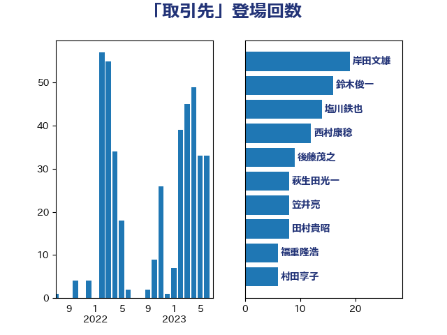

単語「取引先」

| 岸田文雄 | 自由民主党 | 19 回 |
| 鈴木俊一 | 自由民主党 | 16 回 |
| 塩川鉄也 | 日本共産党 | 14 回 |
| 西村康稔 | 自由民主党 | 12 回 |
| 後藤茂之 | 自由民主党 | 9 回 |
| 萩生田光一 | 自由民主党 | 8 回 |
| 笠井亮 | 日本共産党 | 8 回 |
| 田村貴昭 | 日本共産党 | 8 回 |
| 福重隆浩 | 公明党 | 6 回 |
| 村田享子 | 立憲民主党 | 6 回 |
| 大塚耕平 | 国民民主党 | 6 回 |
| 吉田とも代 | 日本維新の会 | 6 回 |
| 角田秀穂 | 公明党 | 5 回 |
| 岡本三成 | 公明党 | 5 回 |
| 鬼木誠 | 立憲民主党 | 4 回 |
| 青柳仁士 | 日本維新の会 | 4 回 |
| 柴田巧 | 日本維新の会 | 4 回 |
| 山添拓 | 日本共産党 | 4 回 |
| 小林鷹之 | 自由民主党 | 4 回 |
| 古庄玄知 | 自由民主党 | 4 回 |
| 青柳陽一郎 | 立憲民主党 | 3 回 |
| 西田実仁 | 公明党 | 3 回 |
| 田村智子 | 日本共産党 | 3 回 |
| 小池晃 | 日本共産党 | 3 回 |
| 中野英幸 | 自由民主党 | 3 回 |
| 中田宏 | 自由民主党 | 3 回 |
| 高木陽介 | 公明党 | 2 回 |
| 高木かおり | 日本維新の会 | 2 回 |
| 階猛 | 立憲民主党 | 2 回 |
| 藤巻健太 | 日本維新の会 | 2 回 |
| 落合貴之 | 立憲民主党 | 2 回 |
| 芳賀道也 | 国民民主党 | 2 回 |
| 源馬謙太郎 | 立憲民主党 | 2 回 |
| 柴愼一 | 立憲民主党 | 2 回 |
| 山際大志郎 | 自由民主党 | 2 回 |
| 山田美樹 | 自由民主党 | 2 回 |
| 小沢雅仁 | 立憲民主党 | 2 回 |
| 小山展弘 | 立憲民主党 | 2 回 |
| 塩村あやか | 立憲民主党 | 2 回 |
| 加藤勝信 | 自由民主党 | 2 回 |
| 前川清成 | 日本維新の会 | 2 回 |
| 伊藤渉 | 公明党 | 2 回 |
| 仁比聡平 | 日本共産党 | 2 回 |
| 中川宏昌 | 公明党 | 2 回 |
| 上田勇 | 公明党 | 2 回 |
| 上月良祐 | 自由民主党 | 2 回 |
| たがや亮 | れいわ新選組 | 2 回 |
| 馬場伸幸 | 日本維新の会 | 1 回 |
| 須藤元気 | 無所属 | 1 回 |
| 青木愛 | 立憲民主党 | 1 回 |
| 青山大人 | 立憲民主党 | 1 回 |
| 長峯誠 | 自由民主党 | 1 回 |
| 鈴木義弘 | 国民民主党 | 1 回 |
| 金子俊平 | 自由民主党 | 1 回 |
| 野村哲郎 | 自由民主党 | 1 回 |
| 藤田文武 | 日本維新の会 | 1 回 |
| 藤原崇 | 自由民主党 | 1 回 |
| 緑川貴士 | 立憲民主党 | 1 回 |
| 細田健一 | 自由民主党 | 1 回 |
| 篠原豪 | 立憲民主党 | 1 回 |
| 神津たけし | 立憲民主党 | 1 回 |
| 石川大我 | 立憲民主党 | 1 回 |
| 石川博崇 | 公明党 | 1 回 |
| 石垣のりこ | 立憲民主党 | 1 回 |
| 石井正弘 | 自由民主党 | 1 回 |
| 石井拓 | 自由民主党 | 1 回 |
| 田野瀬太道 | 無所属 | 1 回 |
| 田村まみ | 国民民主党 | 1 回 |
| 田名部匡代 | 立憲民主党 | 1 回 |
| 田中健 | 国民民主党 | 1 回 |
| 漆間譲司 | 日本維新の会 | 1 回 |
| 浜野喜史 | 国民民主党 | 1 回 |
| 江田憲司 | 立憲民主党 | 1 回 |
| 武部新 | 自由民主党 | 1 回 |
| 櫛渕万里 | れいわ新選組 | 1 回 |
| 横山信一 | 公明党 | 1 回 |
| 梅村聡 | 日本維新の会 | 1 回 |
| 枝野幸男 | 立憲民主党 | 1 回 |
| 松山政司 | 自由民主党 | 1 回 |
| 杉田水脈 | 自由民主党 | 1 回 |
| 杉尾秀哉 | 立憲民主党 | 1 回 |
| 杉久武 | 公明党 | 1 回 |
| 工藤彰三 | 自由民主党 | 1 回 |
| 岬麻紀 | 日本維新の会 | 1 回 |
| 岩田和親 | 自由民主党 | 1 回 |
| 岩渕友 | 日本共産党 | 1 回 |
| 山本博司 | 公明党 | 1 回 |
| 山崎誠 | 立憲民主党 | 1 回 |
| 小野泰輔 | 日本維新の会 | 1 回 |
| 宮本周司 | 自由民主党 | 1 回 |
| 宮崎勝 | 公明党 | 1 回 |
| 宗清皇一 | 自由民主党 | 1 回 |
| 吉良よし子 | 日本共産党 | 1 回 |
| 勝部賢志 | 立憲民主党 | 1 回 |
| 住吉寛紀 | 日本維新の会 | 1 回 |
| 伊藤孝恵 | 国民民主党 | 1 回 |
| 上野通子 | 自由民主党 | 1 回 |
| ながえ孝子 | 無所属 | 1 回 |